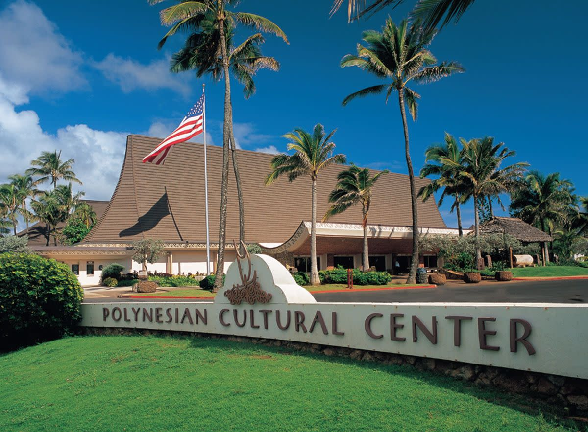

Polynesian Cultural Center
The Polynesian Cultural Center shares Polynesian culture, traditions, dance, and food with visitors from around the world.

The Polynesian Cultural Center shares Polynesian culture, traditions, dance, and food with visitors from around the world.
